Last updated: 2026-06-10
Checks: 7 0
Knit directory: Cellbender_Comp/
This reproducible R Markdown analysis was created with workflowr (version 1.7.2). The Checks tab describes the reproducibility checks that were applied when the results were created. The Past versions tab lists the development history.
Great! Since the R Markdown file has been committed to the Git repository, you know the exact version of the code that produced these results.
Great job! The global environment was empty. Objects defined in the global environment can affect the analysis in your R Markdown file in unknown ways. For reproduciblity it’s best to always run the code in an empty environment.
The command set.seed(20260609) was run prior to running
the code in the R Markdown file. Setting a seed ensures that any results
that rely on randomness, e.g. subsampling or permutations, are
reproducible.
Great job! Recording the operating system, R version, and package versions is critical for reproducibility.
Nice! There were no cached chunks for this analysis, so you can be confident that you successfully produced the results during this run.
Great job! Using relative paths to the files within your workflowr project makes it easier to run your code on other machines.
Great! You are using Git for version control. Tracking code development and connecting the code version to the results is critical for reproducibility.
The results in this page were generated with repository version 835fc77. See the Past versions tab to see a history of the changes made to the R Markdown and HTML files.
Note that you need to be careful to ensure that all relevant files for
the analysis have been committed to Git prior to generating the results
(you can use wflow_publish or
wflow_git_commit). workflowr only checks the R Markdown
file, but you know if there are other scripts or data files that it
depends on. Below is the status of the Git repository when the results
were generated:
working directory clean
Note that any generated files, e.g. HTML, png, CSS, etc., are not included in this status report because it is ok for generated content to have uncommitted changes.
These are the previous versions of the repository in which changes were
made to the R Markdown (analysis/Magda_Samples.Rmd) and
HTML (docs/Magda_Samples.html) files. If you’ve configured
a remote Git repository (see ?wflow_git_remote), click on
the hyperlinks in the table below to view the files as they were in that
past version.
| File | Version | Author | Date | Message |
|---|---|---|---|---|
| Rmd | 835fc77 | Sophie | 2026-06-10 | Updates |
rm(list=ls())
gc() used (Mb) gc trigger (Mb) max used (Mb)
Ncells 894129 47.8 1719267 91.9 1315225 70.3
Vcells 1568150 12.0 8388608 64.0 2320292 17.8library(readr)
library(dplyr)
library(ggplot2)
library(Seurat)
library(hdf5r)
library(scCustomize)
library(patchwork)
library(cowplot)
library(ggrepel)
library(workflowr)Cellbender.master <- "/shares/rheumatologie.usz/Sophie/Gabi_Projects/CellBender_checks_data/Cellbender_output"
benderfiles <- list.files(
path = Cellbender.master,
pattern = "cellbender_output_Sample.*\\.h5",
full.names = TRUE,
recursive = TRUE
)
Raw.master <- "/shares/rheumatologie.usz/Sophie/Gabi_Projects/CellBender_checks_data/Cellranger_output"
rawfiles <- list.files(
path = Raw.master,
pattern = "Sample.*\\.h5",
full.names = TRUE,
recursive = TRUE
)##################################################################### Sample 1
benderfiles[1][1] "/shares/rheumatologie.usz/Sophie/Gabi_Projects/CellBender_checks_data/Cellbender_output/cellbender_output_Sample1_filtered.h5"bender.s1.counts <- Read_CellBender_h5_Mat(benderfiles[1])
bender.s1 <- CreateSeuratObject(counts = bender.s1.counts, project = paste0("Sample1_Bender"))
bender.s1[["percent.mt"]] <- PercentageFeatureSet(bender.s1, pattern = "^MT-")
bender.s1[["percent.rb"]] <- PercentageFeatureSet(bender.s1, pattern = "^RP[SL]")
bender.s1$Method <- "Cellbender"
bender.s1$Sample <- "Sample1"
head(bender.s1) orig.ident nCount_RNA nFeature_RNA percent.mt
AACGTAGGTGACTCCA-1 Sample1_Bender 125705 12344 0.038184639
CCTCCTGGTGCAAGGT-1 Sample1_Bender 102148 9759 0.025453264
CTAGCATGTAGGCGTG-1 Sample1_Bender 89164 9899 0.052711857
CCGGCATGTTATGTCA-1 Sample1_Bender 86323 10595 0.040545393
CAGGGATGTTAAGTCC-1 Sample1_Bender 83524 9846 0.282553518
ACGGGATGTTCGTGCA-1 Sample1_Bender 82115 10155 0.004871217
CCCTGTTGTGAGAGTC-1 Sample1_Bender 81692 10055 0.001224110
AACGGTAGTGCGCATC-1 Sample1_Bender 80414 10969 0.054716840
TCTCTATGTTAGACAG-1 Sample1_Bender 76026 8801 0.000000000
ATTACTGGTTGTCCCT-1 Sample1_Bender 75240 10143 0.203349282
percent.rb Method Sample
AACGTAGGTGACTCCA-1 0.4025297 Cellbender Sample1
CCTCCTGGTGCAAGGT-1 0.1869836 Cellbender Sample1
CTAGCATGTAGGCGTG-1 0.2702885 Cellbender Sample1
CCGGCATGTTATGTCA-1 0.3081450 Cellbender Sample1
CAGGGATGTTAAGTCC-1 1.1685264 Cellbender Sample1
ACGGGATGTTCGTGCA-1 0.3422030 Cellbender Sample1
CCCTGTTGTGAGAGTC-1 0.1701513 Cellbender Sample1
AACGGTAGTGCGCATC-1 0.4252991 Cellbender Sample1
TCTCTATGTTAGACAG-1 0.1775708 Cellbender Sample1
ATTACTGGTTGTCCCT-1 0.6844763 Cellbender Sample1############################### raw
rawfiles[1][1] "/shares/rheumatologie.usz/Sophie/Gabi_Projects/CellBender_checks_data/Cellranger_output/Sample1_filtered_feature_bc_matrix.h5"raw.s1.counts <- Read_CellBender_h5_Mat(rawfiles[1])
raw.s1 <- CreateSeuratObject(counts = raw.s1.counts, project = paste0("Sample1_raw"))
raw.s1[["percent.mt"]] <- PercentageFeatureSet(raw.s1, pattern = "^MT-")
raw.s1[["percent.rb"]] <- PercentageFeatureSet(raw.s1, pattern = "^RP[SL]")
raw.s1$Method <- "Raw"
raw.s1$Sample <- "Sample1"
head(raw.s1) orig.ident nCount_RNA nFeature_RNA percent.mt percent.rb
AAACCCTGTAACGACA-1 Sample1_raw 16110 4609 0.05586592 0.2420857
AAACCCTGTGAGGCCA-1 Sample1_raw 721 522 0.69348128 1.9417476
AAACGATGTGCAACTT-1 Sample1_raw 15320 4807 0.09138381 0.2154047
AAACGATGTGCATCAT-1 Sample1_raw 677 468 0.44313146 1.7725258
AAACGATGTTACACTA-1 Sample1_raw 3608 1462 0.99778271 4.5454545
AAACGATGTTAGGGTA-1 Sample1_raw 795 587 0.50314465 1.3836478
AAACTCCGTAACGATG-1 Sample1_raw 599 411 0.16694491 1.1686144
AAACTCCGTAGCTGGG-1 Sample1_raw 592 430 1.18243243 1.6891892
AAACTCCGTCTTGATA-1 Sample1_raw 23485 5356 0.02129019 0.2086438
AAACTCCGTTGGACCC-1 Sample1_raw 750 534 1.33333333 2.6666667
Method Sample
AAACCCTGTAACGACA-1 Raw Sample1
AAACCCTGTGAGGCCA-1 Raw Sample1
AAACGATGTGCAACTT-1 Raw Sample1
AAACGATGTGCATCAT-1 Raw Sample1
AAACGATGTTACACTA-1 Raw Sample1
AAACGATGTTAGGGTA-1 Raw Sample1
AAACTCCGTAACGATG-1 Raw Sample1
AAACTCCGTAGCTGGG-1 Raw Sample1
AAACTCCGTCTTGATA-1 Raw Sample1
AAACTCCGTTGGACCC-1 Raw Sample1##################################################################### Sample 2
benderfiles[2][1] "/shares/rheumatologie.usz/Sophie/Gabi_Projects/CellBender_checks_data/Cellbender_output/cellbender_output_Sample2_filtered.h5"bender.s2.counts <- Read_CellBender_h5_Mat(benderfiles[2])
bender.s2 <- CreateSeuratObject(counts = bender.s2.counts, project = paste0("Sample2_Bender"))
bender.s2[["percent.mt"]] <- PercentageFeatureSet(bender.s2, pattern = "^MT-")
bender.s2[["percent.rb"]] <- PercentageFeatureSet(bender.s2, pattern = "^RP[SL]")
bender.s2$Method <- "Cellbender"
bender.s2$Sample <- "Sample2"
head(bender.s2) orig.ident nCount_RNA nFeature_RNA percent.mt
CTGCCATCATTAACTC-1 Sample2_Bender 121828 10628 0.311915159
GTCACCTCATAGGTTA-1 Sample2_Bender 78207 8964 0.008950605
CAGTCCTCAGGATTCG-1 Sample2_Bender 80964 9925 0.007410701
GGAAAGCCACTAATGA-1 Sample2_Bender 74139 6919 0.010790542
CCGAAATCAGTTAATG-1 Sample2_Bender 73658 9873 0.080099921
CCACCTGCATTAGTAG-1 Sample2_Bender 71664 8949 0.011163206
GGAGAACCATGCAGAT-1 Sample2_Bender 71519 9476 0.184566339
ATATCCTCATTCGGGA-1 Sample2_Bender 67513 8623 0.005924785
CCTCGATCAGCCATGA-1 Sample2_Bender 68059 9046 0.004407940
GCGTTTCCAATCCCGT-1 Sample2_Bender 66924 8556 0.025401948
percent.rb Method Sample
CTGCCATCATTAACTC-1 1.2353482 Cellbender Sample2
GTCACCTCATAGGTTA-1 0.1969133 Cellbender Sample2
CAGTCCTCAGGATTCG-1 0.1815622 Cellbender Sample2
GGAAAGCCACTAATGA-1 0.1146495 Cellbender Sample2
CCGAAATCAGTTAATG-1 0.2131472 Cellbender Sample2
CCACCTGCATTAGTAG-1 0.1367493 Cellbender Sample2
GGAGAACCATGCAGAT-1 0.7676282 Cellbender Sample2
ATATCCTCATTCGGGA-1 0.1407136 Cellbender Sample2
CCTCGATCAGCCATGA-1 0.2468446 Cellbender Sample2
GCGTTTCCAATCCCGT-1 0.1748252 Cellbender Sample2############################### raw
rawfiles[2][1] "/shares/rheumatologie.usz/Sophie/Gabi_Projects/CellBender_checks_data/Cellranger_output/Sample2_filtered_feature_bc_matrix.h5"raw.s2.counts <- Read_CellBender_h5_Mat(rawfiles[2])
raw.s2 <- CreateSeuratObject(counts = raw.s2.counts, project = paste0("Sample2_raw"))
raw.s2[["percent.mt"]] <- PercentageFeatureSet(raw.s2, pattern = "^MT-")
raw.s2[["percent.rb"]] <- PercentageFeatureSet(raw.s2, pattern = "^RP[SL]")
raw.s2$Method <- "Raw"
raw.s2$Sample <- "Sample2"
head(raw.s2) orig.ident nCount_RNA nFeature_RNA percent.mt percent.rb
AAACGGACAACTGTGG-1 Sample2_raw 848 614 4.48113208 1.7688679
AAACGGACATCGCTTA-1 Sample2_raw 14000 4327 0.06428571 0.3500000
AAACGGACATTCGGGA-1 Sample2_raw 1117 616 13.33930170 2.2381379
AAACGTCCAAGTTACA-1 Sample2_raw 25189 5449 0.02381992 0.1627695
AAACGTCCAATAGCCG-1 Sample2_raw 14213 4294 0.03517906 0.2462534
AAACGTCCAGGGACAG-1 Sample2_raw 851 387 25.49941246 1.5276146
AAACTTGCAATCTAAG-1 Sample2_raw 15501 4126 0.01935359 0.1677311
AAACTTGCAGGAGCCT-1 Sample2_raw 39260 7479 0.08150790 0.2521651
AAACTTGCATCGGGAC-1 Sample2_raw 28935 5660 0.02419215 0.1762571
AAAGCCTCAACTGTAA-1 Sample2_raw 2015 862 0.04962779 0.6947891
Method Sample
AAACGGACAACTGTGG-1 Raw Sample2
AAACGGACATCGCTTA-1 Raw Sample2
AAACGGACATTCGGGA-1 Raw Sample2
AAACGTCCAAGTTACA-1 Raw Sample2
AAACGTCCAATAGCCG-1 Raw Sample2
AAACGTCCAGGGACAG-1 Raw Sample2
AAACTTGCAATCTAAG-1 Raw Sample2
AAACTTGCAGGAGCCT-1 Raw Sample2
AAACTTGCATCGGGAC-1 Raw Sample2
AAAGCCTCAACTGTAA-1 Raw Sample2##################################################################### Sample 3
benderfiles[3][1] "/shares/rheumatologie.usz/Sophie/Gabi_Projects/CellBender_checks_data/Cellbender_output/cellbender_output_Sample3_filtered.h5"bender.s3.counts <- Read_CellBender_h5_Mat(benderfiles[3])
bender.s3 <- CreateSeuratObject(counts = bender.s3.counts, project = paste0("Sample3_Bender"))
bender.s3[["percent.mt"]] <- PercentageFeatureSet(bender.s3, pattern = "^MT-")
bender.s3[["percent.rb"]] <- PercentageFeatureSet(bender.s3, pattern = "^RP[SL]")
bender.s3$Method <- "Cellbender"
bender.s3$Sample <- "Sample3"
head(bender.s3) orig.ident nCount_RNA nFeature_RNA percent.mt
CATTGGATCCATAGAT-1 Sample3_Bender 122208 10988 0.010637601
AGAGTAATCATGCGCG-1 Sample3_Bender 113907 11654 0.057942005
TACATCCTCCAACTGA-1 Sample3_Bender 109396 10631 0.147171743
GTATCCTTCGATCCGG-1 Sample3_Bender 111475 9694 0.256559767
CTTGCCATCCAGGTAC-1 Sample3_Bender 107083 10253 1.420393527
AAGTCCATCCGGTTGG-1 Sample3_Bender 98460 10573 0.078204347
CTTCGGCTCGCGTCCT-1 Sample3_Bender 94171 10466 0.048847310
CCGAATATCGTTAGGC-1 Sample3_Bender 86359 10197 0.040528492
GTGTTAGTCGCTAGGT-1 Sample3_Bender 83284 9435 0.009605687
AGAAGGTTCCCATATC-1 Sample3_Bender 79987 9425 0.018753047
percent.rb Method Sample
CATTGGATCCATAGAT-1 0.1816575 Cellbender Sample3
AGAGTAATCATGCGCG-1 0.2835647 Cellbender Sample3
TACATCCTCCAACTGA-1 0.2970858 Cellbender Sample3
GTATCCTTCGATCCGG-1 1.3841669 Cellbender Sample3
CTTGCCATCCAGGTAC-1 1.3652961 Cellbender Sample3
AAGTCCATCCGGTTGG-1 0.2315661 Cellbender Sample3
CTTCGGCTCGCGTCCT-1 0.2729078 Cellbender Sample3
CCGAATATCGTTAGGC-1 0.2512766 Cellbender Sample3
GTGTTAGTCGCTAGGT-1 0.1909130 Cellbender Sample3
AGAAGGTTCCCATATC-1 0.2125345 Cellbender Sample3############################### raw
rawfiles[3][1] "/shares/rheumatologie.usz/Sophie/Gabi_Projects/CellBender_checks_data/Cellranger_output/Sample3_filtered_feature_bc_matrix.h5"raw.s3.counts <- Read_CellBender_h5_Mat(rawfiles[3])
raw.s3 <- CreateSeuratObject(counts = raw.s3.counts, project = paste0("Sample3_raw"))
raw.s3[["percent.mt"]] <- PercentageFeatureSet(raw.s3, pattern = "^MT-")
raw.s3[["percent.rb"]] <- PercentageFeatureSet(raw.s3, pattern = "^RP[SL]")
raw.s3$Method <- "Raw"
raw.s3$Sample <- "Sample3"
head(raw.s3) orig.ident nCount_RNA nFeature_RNA percent.mt percent.rb
AAACCATTCCACCATT-1 Sample3_raw 24326 5404 0.020554140 0.1808764
AAACCATTCTAAGCGC-1 Sample3_raw 6597 2959 1.576474155 5.7753524
AAACCGCTCGATATGT-1 Sample3_raw 41951 7566 0.030988534 0.1835475
AAACCGCTCGTGCTCC-1 Sample3_raw 1182 498 33.248730964 1.2690355
AAACCGCTCTATGGGC-1 Sample3_raw 14005 4153 0.007140307 0.1856480
AAACGAATCACGCGAT-1 Sample3_raw 548 423 1.459854015 2.1897810
AAACGAATCTAGTAAC-1 Sample3_raw 34989 6586 0.008574123 0.2200692
AAACGCCTCCGCGCTT-1 Sample3_raw 28365 6918 0.454785828 1.1951348
AAACGCCTCGTCTATC-1 Sample3_raw 12203 4318 0.040973531 0.3769565
AAACGGGTCCGCCAAG-1 Sample3_raw 1366 729 18.448023426 1.9765739
Method Sample
AAACCATTCCACCATT-1 Raw Sample3
AAACCATTCTAAGCGC-1 Raw Sample3
AAACCGCTCGATATGT-1 Raw Sample3
AAACCGCTCGTGCTCC-1 Raw Sample3
AAACCGCTCTATGGGC-1 Raw Sample3
AAACGAATCACGCGAT-1 Raw Sample3
AAACGAATCTAGTAAC-1 Raw Sample3
AAACGCCTCCGCGCTT-1 Raw Sample3
AAACGCCTCGTCTATC-1 Raw Sample3
AAACGGGTCCGCCAAG-1 Raw Sample3##################################################################### Sample 4
benderfiles[4][1] "/shares/rheumatologie.usz/Sophie/Gabi_Projects/CellBender_checks_data/Cellbender_output/cellbender_output_Sample4_filtered.h5"bender.s4.counts <- Read_CellBender_h5_Mat(benderfiles[4])
bender.s4 <- CreateSeuratObject(counts = bender.s4.counts, project = paste0("Sample4_Bender"))
bender.s4[["percent.mt"]] <- PercentageFeatureSet(bender.s4, pattern = "^MT-")
bender.s4[["percent.rb"]] <- PercentageFeatureSet(bender.s4, pattern = "^RP[SL]")
bender.s4$Method <- "Cellbender"
bender.s4$Sample <- "Sample4"
bender.s4An object of class Seurat
38606 features across 26618 samples within 1 assay
Active assay: RNA (38606 features, 0 variable features)
1 layer present: countshead(bender.s4) orig.ident nCount_RNA nFeature_RNA percent.mt
CATAGTTAGCTTCCTG-1 Sample4_Bender 113667 10823 0.005278577
ACTGCTAAGGGGCAAC-1 Sample4_Bender 90223 9327 0.007758554
CTGTAATAGCGGTCCA-1 Sample4_Bender 81369 9925 0.058990525
ATACACTAGTAATCCG-1 Sample4_Bender 78441 9624 0.005099374
AAGCTAAAGGTACGTC-1 Sample4_Bender 76867 9135 2.115342084
CAGTTATAGCCAGACT-1 Sample4_Bender 75591 9053 0.023812359
TACCACAAGGGGATCA-1 Sample4_Bender 75503 9814 0.018542310
ACAGAACAGCATATCG-1 Sample4_Bender 69761 9057 0.010034260
TCAGAGGAGCGCCTTC-1 Sample4_Bender 66054 7546 0.003027826
CATACCAAGTAACCTG-1 Sample4_Bender 66064 7473 0.016650521
percent.rb Method Sample
CATAGTTAGCTTCCTG-1 0.4521981 Cellbender Sample4
ACTGCTAAGGGGCAAC-1 1.3943230 Cellbender Sample4
CTGTAATAGCGGTCCA-1 0.5690128 Cellbender Sample4
ATACACTAGTAATCCG-1 0.1606303 Cellbender Sample4
AAGCTAAAGGTACGTC-1 4.2397908 Cellbender Sample4
CAGTTATAGCCAGACT-1 0.5132886 Cellbender Sample4
TACCACAAGGGGATCA-1 0.2052899 Cellbender Sample4
ACAGAACAGCATATCG-1 0.1834836 Cellbender Sample4
TCAGAGGAGCGCCTTC-1 1.4200503 Cellbender Sample4
CATACCAAGTAACCTG-1 0.7235408 Cellbender Sample4############################### raw
rawfiles[4][1] "/shares/rheumatologie.usz/Sophie/Gabi_Projects/CellBender_checks_data/Cellranger_output/Sample4_filtered_feature_bc_matrix.h5"raw.s4.counts <- Read_CellBender_h5_Mat(rawfiles[4])
raw.s4 <- CreateSeuratObject(counts = raw.s4.counts, project = paste0("Sample4_raw"))
raw.s4[["percent.mt"]] <- PercentageFeatureSet(raw.s4, pattern = "^MT-")
raw.s4[["percent.rb"]] <- PercentageFeatureSet(raw.s4, pattern = "^RP[SL]")
raw.s4$Method <- "Raw"
raw.s4$Sample <- "Sample4"
raw.s4An object of class Seurat
38606 features across 1802 samples within 1 assay
Active assay: RNA (38606 features, 0 variable features)
1 layer present: countshead(raw.s4) orig.ident nCount_RNA nFeature_RNA percent.mt percent.rb
AAACCAAAGCATCGAC-1 Sample4_raw 7351 2947 0.612161611 2.0133315
AAACCAAAGTTAGTGT-1 Sample4_raw 41047 6767 0.077959412 0.1778449
AAACGACAGAAGGTAC-1 Sample4_raw 20251 4636 0.019752111 0.4938028
AAACGTAAGGTACACC-1 Sample4_raw 52140 7829 0.019179133 0.1630226
AAACGTAAGTATGGCC-1 Sample4_raw 12413 4179 0.048336421 0.2739064
AAAGCTAAGGGTAGGC-1 Sample4_raw 16192 4191 0.006175889 0.2346838
AAAGCTAAGTGGGTTC-1 Sample4_raw 18826 5076 0.005311803 0.1699777
AAAGGTCAGAAGGAAG-1 Sample4_raw 15646 4292 0.031957050 0.2109165
AAAGGTCAGCGGTAGA-1 Sample4_raw 21350 4814 0.327868852 0.2154567
AAAGGTCAGGCAATGG-1 Sample4_raw 20063 4881 0.019937198 0.1844191
Method Sample
AAACCAAAGCATCGAC-1 Raw Sample4
AAACCAAAGTTAGTGT-1 Raw Sample4
AAACGACAGAAGGTAC-1 Raw Sample4
AAACGTAAGGTACACC-1 Raw Sample4
AAACGTAAGTATGGCC-1 Raw Sample4
AAAGCTAAGGGTAGGC-1 Raw Sample4
AAAGCTAAGTGGGTTC-1 Raw Sample4
AAAGGTCAGAAGGAAG-1 Raw Sample4
AAAGGTCAGCGGTAGA-1 Raw Sample4
AAAGGTCAGGCAATGG-1 Raw Sample4process_single_cell_pair <- function(b_file, r_file, s_name) {
# bender object
counts_b <- Read_CellBender_h5_Mat(b_file)
obj_b <- CreateSeuratObject(counts = counts_b, project = paste0(s_name, "_Bender"))
obj_b[["percent.mt"]] <- PercentageFeatureSet(obj_b, pattern = "^MT-")
obj_b[["percent.rb"]] <- PercentageFeatureSet(obj_b, pattern = "^RP[SL]")
meta_b <- obj_b@meta.data
meta_b$Method <- "Cellbender"
meta_b$Sample <- s_name
# raw object
counts_r <- Read10X_h5(r_file)
obj_r <- CreateSeuratObject(counts = counts_r, project = paste0(s_name, "_raw"))
obj_r[["percent.mt"]] <- PercentageFeatureSet(obj_r, pattern = "^MT-")
obj_r[["percent.rb"]] <- PercentageFeatureSet(obj_r, pattern = "^RP[SL]")
meta_r <- obj_r@meta.data
meta_r$Method <- "Raw"
meta_r$Sample <- s_name
columns_to_keep <- c("nCount_RNA", "nFeature_RNA", "percent.mt", "percent.rb", "Method", "Sample")
combined_metadata <- rbind(meta_b[, columns_to_keep], meta_r[, columns_to_keep])
results <- list(
bender_obj = obj_b,
raw_obj = obj_r,
metadata = combined_metadata
)
return(results)
}
########################################################################
generate_qc_plots <- function(df, s_name) {
# 1. Filter data for the specific sample
sample_df <- df[df$Sample == s_name, ]
# Plot
p1 <- ggplot(sample_df, aes(x = Method, y = nCount_RNA, fill = Method)) +
geom_violin(alpha = 0.7) +
theme_classic() +
labs(title = "nCount_RNA", x = NULL, y = NULL) +
theme(legend.position = "none")
p2 <- ggplot(sample_df, aes(x = Method, y = nFeature_RNA, fill = Method)) +
geom_violin(alpha = 0.7) +
theme_classic() +
labs(title = "nFeature_RNA", x = NULL, y = NULL) +
theme(legend.position = "none")
p3 <- ggplot(sample_df, aes(x = Method, y = percent.mt, fill = Method)) +
geom_violin(alpha = 0.7) +
theme_classic() +
labs(title = "percent.mt", x = NULL, y = NULL) +
theme(legend.position = "none")
p4 <- ggplot(sample_df, aes(x = Method, y = percent.rb, fill = Method)) +
geom_violin(alpha = 0.7) +
theme_classic() +
labs(title = "percent.rb", x = NULL, y = NULL) +
theme(legend.position = "none")
# patchwork
sample_grid <- (p1 + p2) / (p3 + p4) +
plot_annotation(
title = s_name,
theme = theme(plot.title = element_text(size = 16, face = "bold", hjust = 0.5))
)
# Zoomed grid
p1_zoom <- p1 + coord_cartesian(ylim = c(0, 60000))
p3_zoom <- p3 + coord_cartesian(ylim = c(0, 5))
p4_zoom <- p4 + coord_cartesian(ylim = c(0, 5))
sample_grid_zoom <- (p1_zoom + p2) / (p3_zoom + p4_zoom) +
plot_annotation(
title = paste0(s_name, " (Zoom)"),
theme = theme(plot.title = element_text(size = 16, face = "bold", hjust = 0.5))
)
print(sample_grid)
print(sample_grid_zoom)
}seurat_bender_list <- list()
seurat_raw_list <- list()
metadata_qc_list <- list()sample_names <- gsub("cellbender_output_|_filtered\\.h5", "", basename(benderfiles))
no.benderfiles <- rawfiles
all_metadata_list <- list()
for (i in seq_along(benderfiles)) {
s_name <- sample_names[i]
b_file <- benderfiles[i]
# Find the exact matching raw file
r_file <- no.benderfiles[grep(s_name, basename(no.benderfiles))][1]
# Safety check to prevent crashing on missing files
if (is.na(r_file) || length(r_file) == 0) {
warning(paste("Skipping: No raw file found for", s_name))
next
}
# Process pair
res <- process_single_cell_pair(b_file = b_file, r_file = r_file, s_name = s_name)
df <- res$metadata
all_metadata_list[[s_name]] <- df
#
generate_qc_plots(df = df, s_name = s_name)
rm(res, df)
gc()
}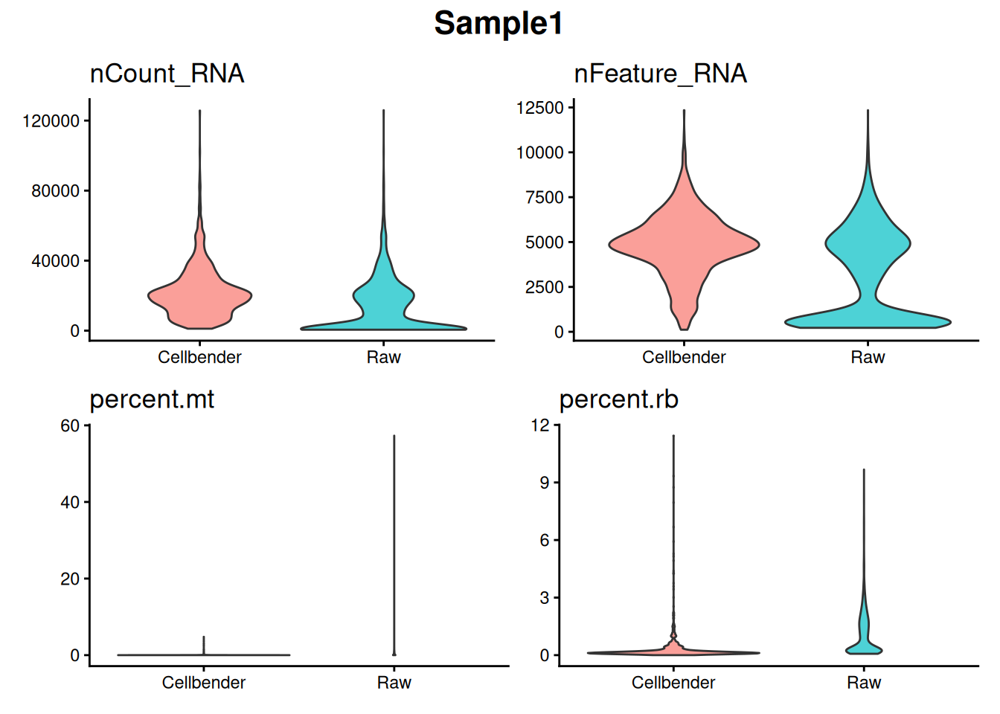
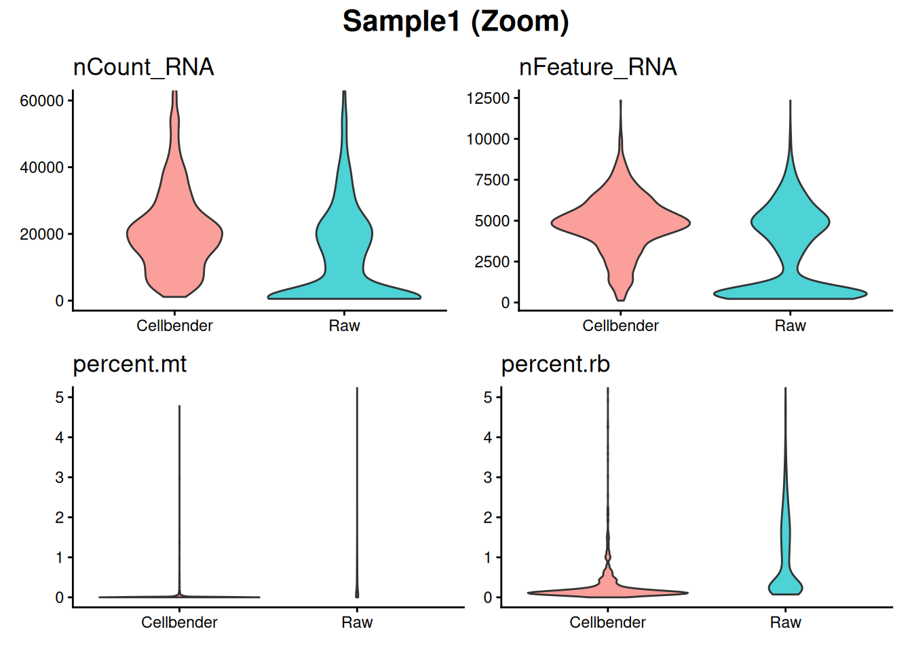
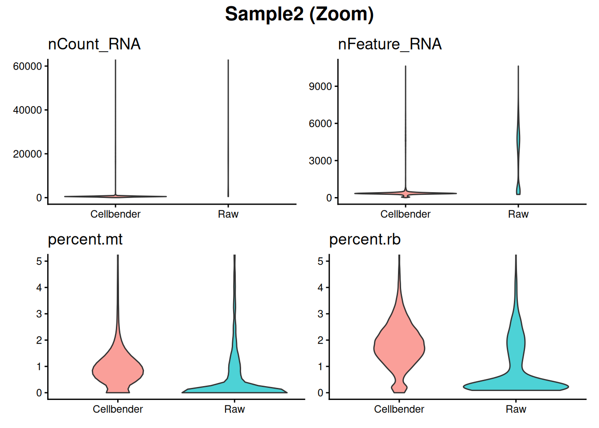
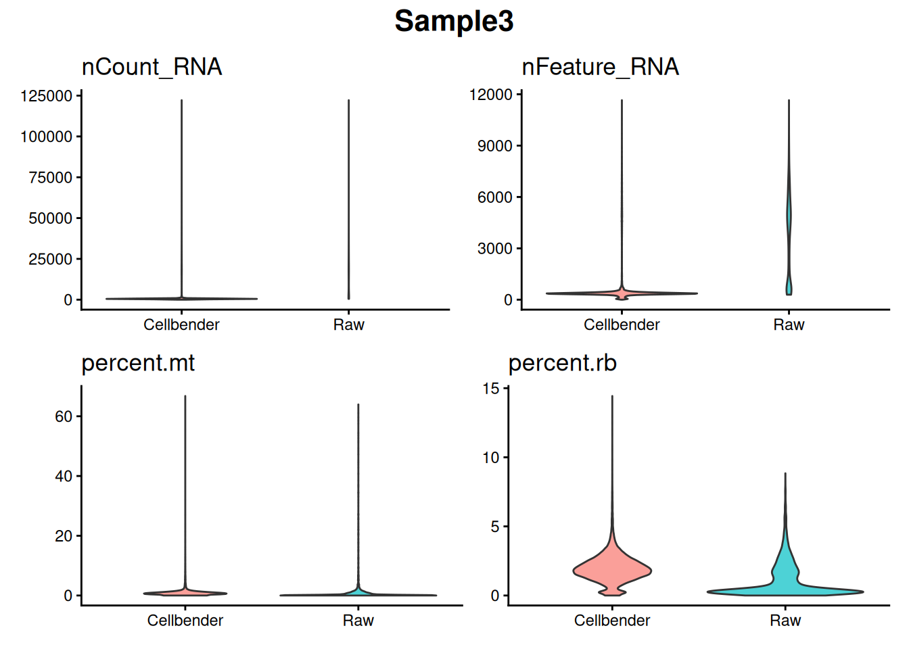
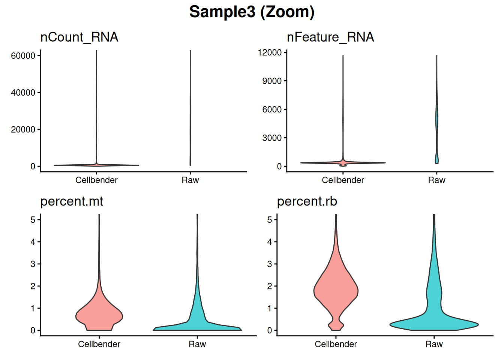
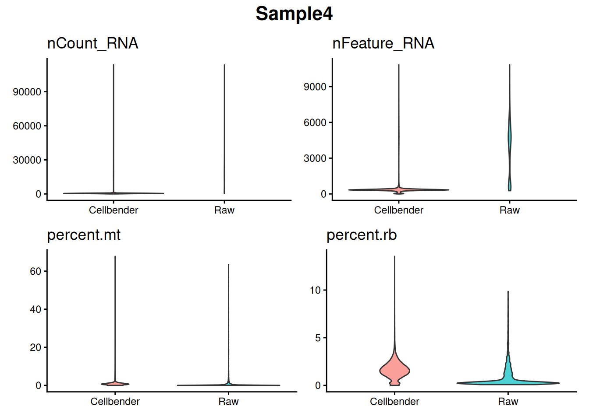
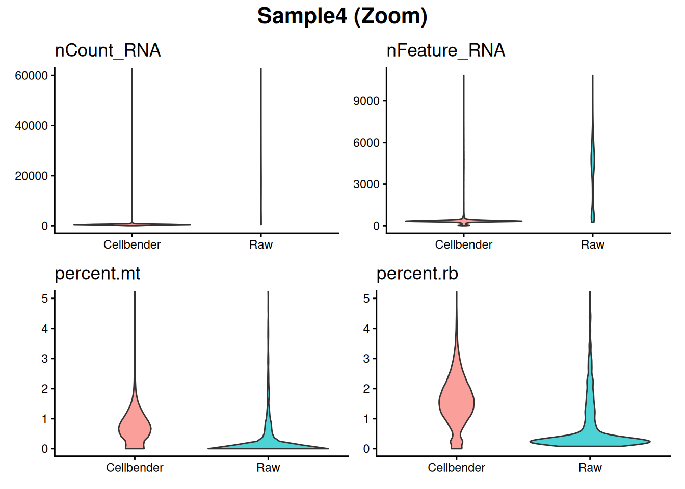
# 3. Combine all individual dataframes into one master dataframe at the end
master_compare_df <- do.call(rbind, all_metadata_list)
table(master_compare_df$Sample)
Sample1 Sample2 Sample3 Sample4
3914 32306 38122 28420 Sample 2-4 seems like something went wrong..
counts_matrix <- table(master_compare_df$Sample, master_compare_df$Method)
counts_wide <- as.data.frame.matrix(counts_matrix)
counts_wide$Sample <- rownames(counts_wide)
#################################################################
ggplot(counts_wide, aes(x = Raw, y = Cellbender)) +
geom_abline(intercept = 0, slope = 1, color = "grey50", size = 0.8) +
geom_point(color = "#4682B4", size = 4, alpha = 0.9) +
# Labels
geom_text_repel(aes(label = Sample), size = 3.5, fontface = "bold", box.padding = 0.4) +
# Layout styling
theme_classic() +
labs(
title = "Cell Count Retention: Raw vs. Cellbender",
x = "Raw Cell Count (Cellranger)",
y = "Cellbender Cell Count"
) +
theme(
plot.title = element_text(face = "bold", size = 14, hjust = 0.5),
plot.subtitle = element_text(size = 10, color = "grey30", hjust = 0.5),
axis.title = element_text(face = "bold", size = 11)
)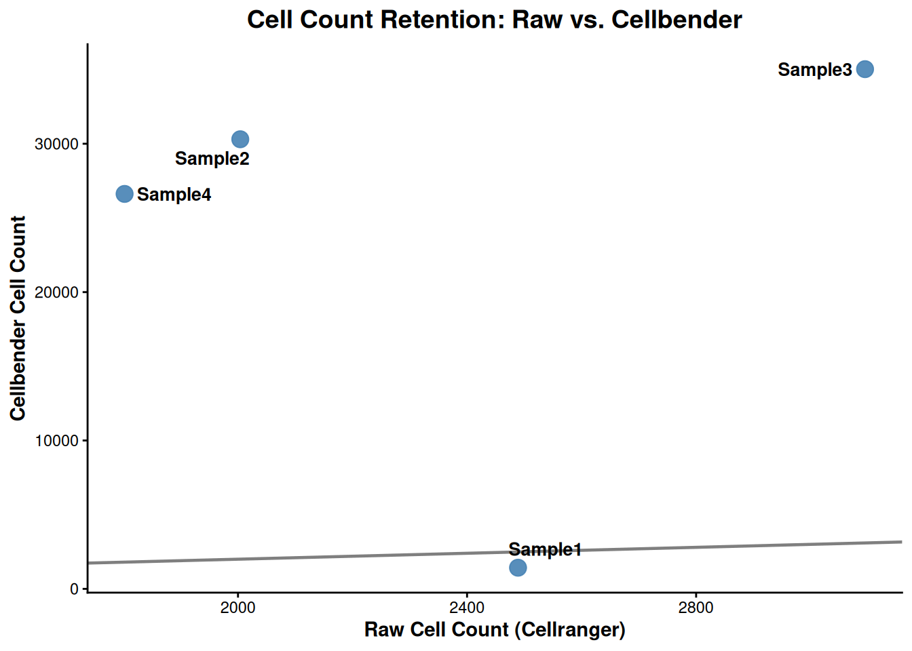
##################################################################### Sample 1
path1 <- "/shares/rheumatologie.usz/Sophie/Gabi_Projects/CellBender_checks_data/Cellbender_output/cellbender_output_Exp3_CMHEF_TGF_filtered.h5"
bender.s1.counts <- Read_CellBender_h5_Mat(path1)
bender.s1 <- CreateSeuratObject(counts = bender.s1.counts, project = paste0("Exp3_CMHEF_TGF_Bender"))
bender.s1[["percent.mt"]] <- PercentageFeatureSet(bender.s1, pattern = "^MT-")
bender.s1[["percent.rb"]] <- PercentageFeatureSet(bender.s1, pattern = "^RP[SL]")
bender.s1$Method <- "Cellbender"
bender.s1$Sample <- "Exp3_CMHEF_TGF"
bender.s1An object of class Seurat
38606 features across 8049 samples within 1 assay
Active assay: RNA (38606 features, 0 variable features)
1 layer present: countshead(bender.s1) orig.ident nCount_RNA nFeature_RNA percent.mt
GTTACTTCAATCTATC-1 Exp3_CMHEF_TGF_Bender 91156 11131 0.08337356
CAAGCTGCAGCACCTT-1 Exp3_CMHEF_TGF_Bender 90049 10351 0.14103433
CCTGTCGCAGTTGCTC-1 Exp3_CMHEF_TGF_Bender 78898 10436 0.05703567
ACTCACCCAGGTATCG-1 Exp3_CMHEF_TGF_Bender 75444 9992 0.03446265
CCTCCAGCATTAGACA-1 Exp3_CMHEF_TGF_Bender 74039 9990 0.06483070
TCTGCACCATCAAGGT-1 Exp3_CMHEF_TGF_Bender 70943 9845 0.08739411
TCACTTGCAATGGGCC-1 Exp3_CMHEF_TGF_Bender 68197 9698 0.03372582
ACTCATTCACTTGAGG-1 Exp3_CMHEF_TGF_Bender 67394 9870 0.15134878
ACCGCAACATCACTCA-1 Exp3_CMHEF_TGF_Bender 67244 9825 0.09220153
CACCTCGCAAGTAGCT-1 Exp3_CMHEF_TGF_Bender 64972 9742 0.53253709
percent.rb Method Sample
GTTACTTCAATCTATC-1 1.4853657 Cellbender Exp3_CMHEF_TGF
CAAGCTGCAGCACCTT-1 0.4575287 Cellbender Exp3_CMHEF_TGF
CCTGTCGCAGTTGCTC-1 2.2243910 Cellbender Exp3_CMHEF_TGF
ACTCACCCAGGTATCG-1 0.7369705 Cellbender Exp3_CMHEF_TGF
CCTCCAGCATTAGACA-1 1.0724078 Cellbender Exp3_CMHEF_TGF
TCTGCACCATCAAGGT-1 2.3920612 Cellbender Exp3_CMHEF_TGF
TCACTTGCAATGGGCC-1 1.1716058 Cellbender Exp3_CMHEF_TGF
ACTCATTCACTTGAGG-1 2.5937027 Cellbender Exp3_CMHEF_TGF
ACCGCAACATCACTCA-1 0.8640176 Cellbender Exp3_CMHEF_TGF
CACCTCGCAAGTAGCT-1 3.3783784 Cellbender Exp3_CMHEF_TGF############################### raw
path2 <- "/shares/rheumatologie.usz/Sophie/Gabi_Projects/CellBender_checks_data/Cellranger_output/Exp3_CMHEF_TGF_filtered_feature_bc_matrix.h5"
raw.s1.counts <- Read_CellBender_h5_Mat(path2)
raw.s1 <- CreateSeuratObject(counts = raw.s1.counts, project = paste0("Exp3_CMHEF_TGF_raw"))
raw.s1[["percent.mt"]] <- PercentageFeatureSet(raw.s1, pattern = "^MT-")
raw.s1[["percent.rb"]] <- PercentageFeatureSet(raw.s1, pattern = "^RP[SL]")
raw.s1$Method <- "Raw"
raw.s1$Sample <- "Sample1"
raw.s1An object of class Seurat
38606 features across 8176 samples within 1 assay
Active assay: RNA (38606 features, 0 variable features)
1 layer present: countshead(raw.s1) orig.ident nCount_RNA nFeature_RNA percent.mt
AAACCCGCAATTCGTT-1 Exp3_CMHEF_TGF_raw 8114 3602 0.03697313
AAACCCGCACATTCGC-1 Exp3_CMHEF_TGF_raw 6365 2597 0.03142184
AAACCCGCATCCGTAC-1 Exp3_CMHEF_TGF_raw 546 421 0.00000000
AAACCCGCATGGATCG-1 Exp3_CMHEF_TGF_raw 2466 1403 2.43309002
AAACGGACAAGTGGAA-1 Exp3_CMHEF_TGF_raw 5284 2399 0.26495079
AAACGGACACATTGAA-1 Exp3_CMHEF_TGF_raw 9443 3549 0.02117971
AAACGGACACCATCGT-1 Exp3_CMHEF_TGF_raw 4548 2167 0.06596306
AAACGGACACTTAGGG-1 Exp3_CMHEF_TGF_raw 8524 3488 0.03519474
AAACGGACATAACGAC-1 Exp3_CMHEF_TGF_raw 7524 3035 0.09303562
AAACGGACATCAAGGT-1 Exp3_CMHEF_TGF_raw 14895 4623 0.04699564
percent.rb Method Sample
AAACCCGCAATTCGTT-1 1.4049790 Raw Sample1
AAACCCGCACATTCGC-1 0.8169678 Raw Sample1
AAACCCGCATCCGTAC-1 7.1428571 Raw Sample1
AAACCCGCATGGATCG-1 12.0032441 Raw Sample1
AAACGGACAAGTGGAA-1 1.2679788 Raw Sample1
AAACGGACACATTGAA-1 0.6036217 Raw Sample1
AAACGGACACCATCGT-1 0.7475814 Raw Sample1
AAACGGACACTTAGGG-1 1.4547161 Raw Sample1
AAACGGACATAACGAC-1 2.3258905 Raw Sample1
AAACGGACATCAAGGT-1 0.4900973 Raw Sample1################################################################# merge
Exp3_CMHEF_TGF <- merge(
x = bender.s1,
y = raw.s1,
add.cell.ids = c("S1_B", "S1_R")
)It looks almost the same? only 127 droplets removed?
p1 <- VlnPlot(
object = Exp3_CMHEF_TGF,
features = "nCount_RNA",
group.by = "Sample",
split.by = "Method",
pt.size = 0,
y.max = 35000,
raster = FALSE
)The default behaviour of split.by has changed.
Separate violin plots are now plotted side-by-side.
To restore the old behaviour of a single split violin,
set split.plot = TRUE.
This message will be shown once per session.p2 <- VlnPlot(
object = Exp3_CMHEF_TGF,
features = "nFeature_RNA",
group.by = "Sample",
split.by = "Method",
pt.size = 0,
raster = FALSE
)
p3 <- VlnPlot(
object = Exp3_CMHEF_TGF,
features = "percent.mt",
group.by = "Sample",
split.by = "Method",
pt.size = 0,
y.max = 5,
raster = FALSE
)
p4 <- VlnPlot(
object = Exp3_CMHEF_TGF,
features = "percent.rb",
group.by = "Sample",
split.by = "Method",
pt.size = 0,
y.max = 10,
raster = FALSE
)
p1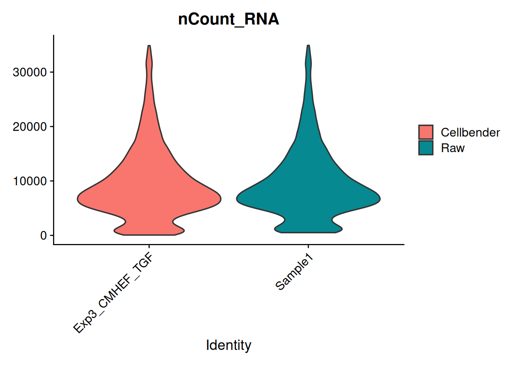
p2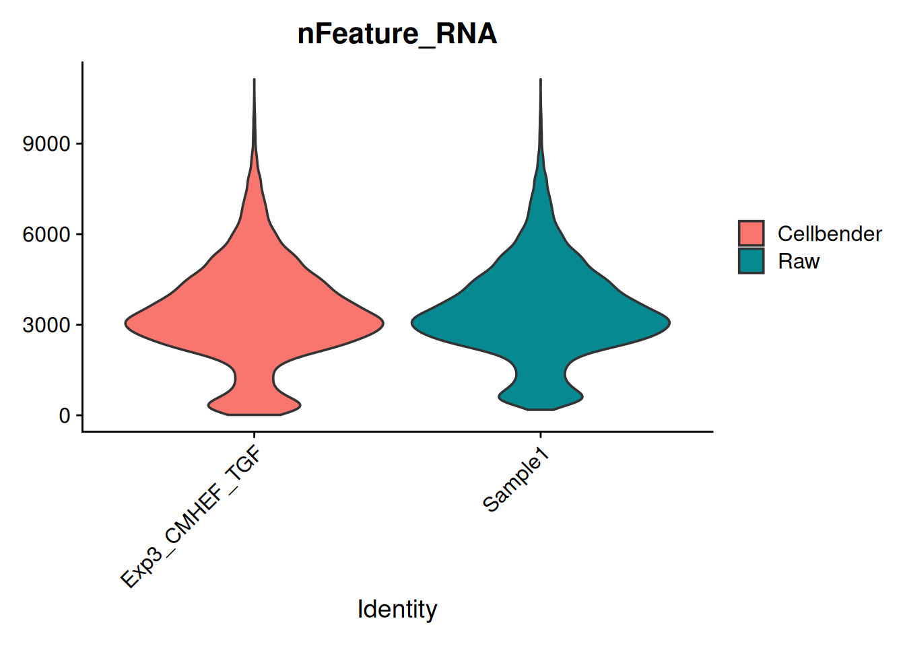
p3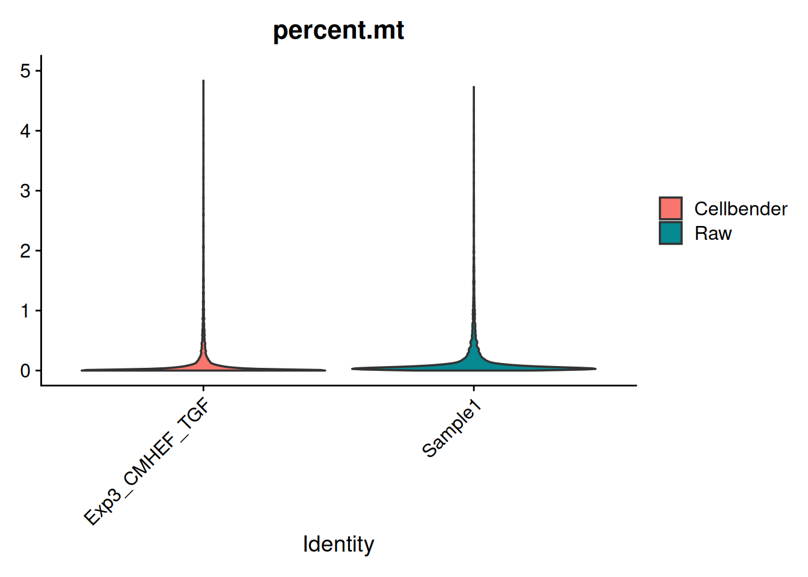
p4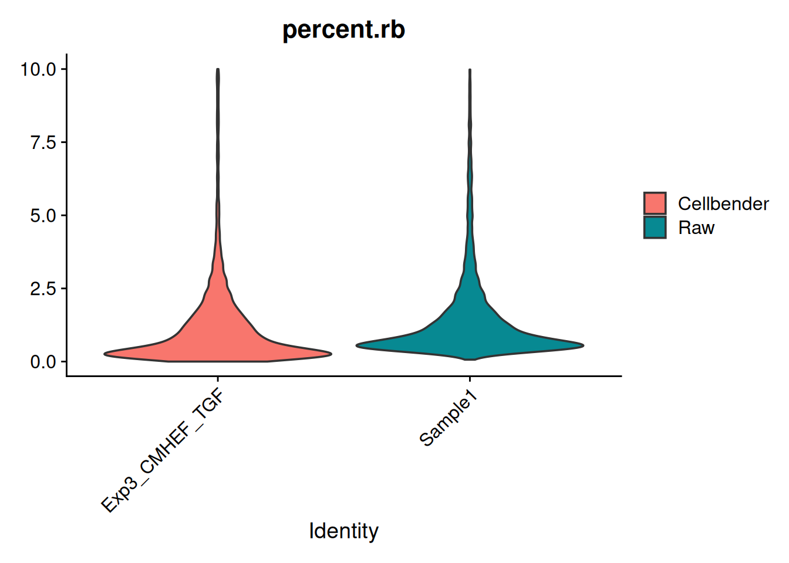
sessionInfo()R version 4.5.2 (2025-10-31)
Platform: x86_64-pc-linux-gnu
Running under: Ubuntu 24.04.3 LTS
Matrix products: default
BLAS: /usr/lib/x86_64-linux-gnu/openblas-pthread/libblas.so.3
LAPACK: /usr/lib/x86_64-linux-gnu/openblas-pthread/libopenblasp-r0.3.26.so; LAPACK version 3.12.0
locale:
[1] LC_CTYPE=en_US.UTF-8 LC_NUMERIC=C
[3] LC_TIME=en_US.UTF-8 LC_COLLATE=en_US.UTF-8
[5] LC_MONETARY=en_US.UTF-8 LC_MESSAGES=en_US.UTF-8
[7] LC_PAPER=en_US.UTF-8 LC_NAME=C
[9] LC_ADDRESS=C LC_TELEPHONE=C
[11] LC_MEASUREMENT=en_US.UTF-8 LC_IDENTIFICATION=C
time zone: Etc/UTC
tzcode source: system (glibc)
attached base packages:
[1] stats graphics grDevices utils datasets methods base
other attached packages:
[1] ggrepel_0.9.6 cowplot_1.2.0 patchwork_1.3.2 scCustomize_3.2.4
[5] hdf5r_1.3.12 Seurat_5.4.0 SeuratObject_5.3.0 sp_2.2-0
[9] ggplot2_4.0.0 dplyr_1.1.4 readr_2.1.5 workflowr_1.7.2
loaded via a namespace (and not attached):
[1] RColorBrewer_1.1-3 shape_1.4.6.1 rstudioapi_0.17.1
[4] jsonlite_2.0.0 magrittr_2.0.4 ggbeeswarm_0.7.3
[7] spatstat.utils_3.2-0 farver_2.1.2 rmarkdown_2.30
[10] GlobalOptions_0.1.3 fs_2.0.1 vctrs_0.6.5
[13] ROCR_1.0-12 spatstat.explore_3.5-3 paletteer_1.7.0
[16] janitor_2.2.1 forcats_1.0.1 htmltools_0.5.8.1
[19] sass_0.4.10 sctransform_0.4.3 parallelly_1.46.1
[22] KernSmooth_2.23-26 bslib_0.9.0 htmlwidgets_1.6.4
[25] ica_1.0-3 plyr_1.8.9 lubridate_1.9.4
[28] plotly_4.11.0 zoo_1.8-14 cachem_1.1.0
[31] whisker_0.4.1 igraph_2.2.1 mime_0.13
[34] lifecycle_1.0.5 pkgconfig_2.0.3 Matrix_1.7-4
[37] R6_2.6.1 fastmap_1.2.0 snakecase_0.11.1
[40] fitdistrplus_1.2-5 future_1.69.0 shiny_1.11.1
[43] digest_0.6.37 colorspace_2.1-2 rematch2_2.1.2
[46] ps_1.9.1 rprojroot_2.1.1 tensor_1.5.1
[49] RSpectra_0.16-2 irlba_2.3.5.1 labeling_0.4.3
[52] progressr_0.18.0 timechange_0.3.0 spatstat.sparse_3.1-0
[55] httr_1.4.7 polyclip_1.10-7 abind_1.4-8
[58] compiler_4.5.2 bit64_4.6.0-1 withr_3.0.2
[61] S7_0.2.0 fastDummies_1.7.5 MASS_7.3-65
[64] tools_4.5.2 vipor_0.4.7 lmtest_0.9-40
[67] otel_0.2.0 beeswarm_0.4.0 httpuv_1.6.16
[70] future.apply_1.20.1 goftest_1.2-3 glue_1.8.0
[73] callr_3.7.6 nlme_3.1-168 promises_1.4.0
[76] grid_4.5.2 Rtsne_0.17 getPass_0.2-4
[79] cluster_2.1.8.1 reshape2_1.4.5 generics_0.1.4
[82] gtable_0.3.6 spatstat.data_3.1-9 tzdb_0.5.0
[85] tidyr_1.3.1 data.table_1.17.8 hms_1.1.4
[88] spatstat.geom_3.6-0 RcppAnnoy_0.0.23 RANN_2.6.2
[91] pillar_1.11.1 stringr_1.5.2 ggprism_1.0.7
[94] spam_2.11-3 RcppHNSW_0.6.0 later_1.4.4
[97] circlize_0.4.17 splines_4.5.2 lattice_0.22-7
[100] bit_4.6.0 survival_3.8-3 deldir_2.0-4
[103] tidyselect_1.2.1 miniUI_0.1.2 pbapply_1.7-4
[106] knitr_1.50 git2r_0.36.2 gridExtra_2.3
[109] scattermore_1.2 xfun_0.58 matrixStats_1.5.0
[112] stringi_1.8.7 lazyeval_0.2.2 yaml_2.3.10
[115] evaluate_1.0.5 codetools_0.2-20 tibble_3.3.0
[118] cli_3.6.5 uwot_0.2.4 xtable_1.8-4
[121] reticulate_1.44.1 processx_3.8.6 jquerylib_0.1.4
[124] Rcpp_1.1.0 mcprogress_0.1.1 globals_0.18.0
[127] spatstat.random_3.4-2 png_0.1-8 ggrastr_1.0.2
[130] spatstat.univar_3.1-4 parallel_4.5.2 dotCall64_1.2
[133] listenv_0.10.0 viridisLite_0.4.2 scales_1.4.0
[136] ggridges_0.5.7 purrr_1.1.0 rlang_1.1.7